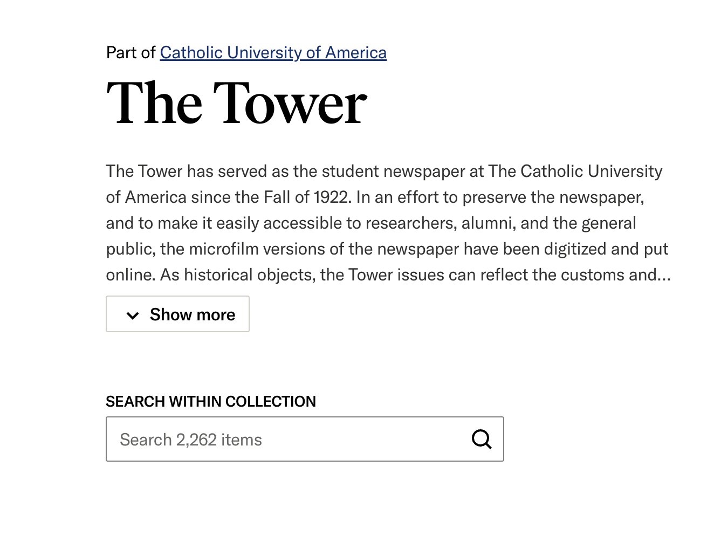
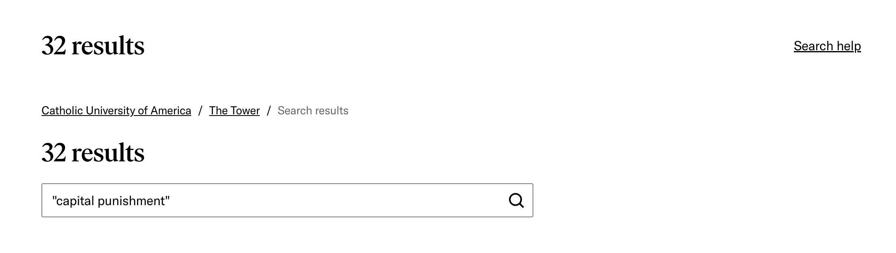

To analyze the usability of JSTOR’s The Tower Archive I used the two recommended approaches.
The first approach was to explore the website’s usability with an input/output framework. I did this by searching for specific terms. I chose search terms related to Eastern Orthodoxy (another large Christian religion) because it’s a topic I’m familiar with and I was curious how often news regarding ecumenical dialogue would appear in a Pontifical university’s newspaper.
Table of search inputs and outputs:
| Input | Output | |
|---|---|---|
| Input/Output 1 | Searched for the word “orthodox” via the “search within collection” search box | 81 results – links to full issues PDFs of The Tower that were arranged by date |
| Input/Output 2 | Searched for the phrase “Eastern Orthodox” via the “search within collection” search box | 8 results – links to full issues of The Tower that were arranged by date |
| Input/Output 3 | Searched for the phrase “Greek Orthodox” via the “search within collection” search box | 6 results – links to full issues of The Tower that were arranged by date |
| Input/Output 4 | Searched for the name “Bartholomew” via the “search within collection” search box arranged by date* | 34 results – links to full issues of The Tower that were arranged by date |
| Heuristic Description | Analysis |
|---|---|
| Visibility of System Status: The system should always keep users informed about what is happening through clear feedback within a reasonable time. | I felt the system performed well on this measure. The results were always timely. | Match Between System and Real World: The design should speak the user’s language. Use words, phrases, and concepts familiar to the user rather than technical jargon, and follow real-world conventions. | I felt the system performed well on this measure. The search method supported quotations marks for exact phrase searching, similar to familiar search engines such as Google. |
| User Control and Freedom: Users often make mistakes and need a clearly marked “emergency exit” or “undo” feature to leave the unwanted state without going through an extended process. | This is where I found the system most lacking. There wasn’t an easily identifiable “back button” that took you back to just searching The Tower archive vs. searching JSTOR as a whole. |
| Consistency and Standards: Users should not have to wonder whether different words, situations, or actions mean the same thing. Follow platform and industry conventions (e.g. standard button placements and icon styles.) | I’d say there was a mixed result. Some button placement and iconography was consistent (ex. The placement of the download, save and cite buttons and their iconography.) But a “back” button wasn’t apparent or located where you would expect it to be. |
| Error Prevention: Good error messages are important, but careful design which prevents a problem from occurring in the first place is even better. | I’d say there was a mixed result. I accidentally searched within my results instead of doing a new search. I feel this could have been prevented by not having “search with results” as the default search. |
| Recognition Rather than Recall: Minimize the user’s cognitive load by making elements, actions, and options visible. The user should not have to remember information from one part of the interface to another. | I’d say there was a mixed result. The initial search page looks different than the page you encounter after doing a search–for example the “Advanced Search” option is not available. |
| Flexibility and Efficiency of Use: Shortcuts–hidden from novice users–may speed up the interaction for the expert user so that the design can cater to both inexperienced and experienced users. | I am a novice user but noticed that it was easy to use shortcuts such as Ctrl+F in the PDF documents stored on JSTOR and exact phrases and wildcards in JSTOR searching. |
| Aesthetic and Minimalist Design: Dialogues and interfaces should not contain information that is irrelevant or rarely needed. Every extra unit of information in an interface competes with relevant information. | The site is both minimalist and aesthetically pleasing. |
| Help Users Recognize, Diagnose and Recover from Errors: Error messages should be expressed in plain language (no error codes like “Error 404” or obscure jargon), precisely indicate the problem and constructively suggest a solution. | I didn’t encounter any error messages for evaluation. |
| Help and Documentation: Even though it is better if the system can be used without documentation, it may be necessary to provide help and documentation. Such info should be easy to search, focused on the user’s task, and list concrete steps to be carried out. | I thought the help button and function were both helpful. |
The volunteer was engaged and interested, however they did seem frustrated and unsatisfied. In their questionnaire, they complained that the PDFs were difficult to search, and that the zoom function was limited. They also expressed frustration that the main search box wasn’t well-tied to the filters, so that new searches reset filters.
The volunteer did, however, find the system to be aesthetically pleasing.
Despite that we both made similar assessments of the system. We both found it to be interesting and attractive but somewhat difficult to navigate. In particular, we both expressed that we wish a back button would have been available and that filters could be easily applied to all searches. We both found the in-system PDF viewer to be slightly clunky.
My main recommendations would be an easy “back” button and a visually improved method of searching within the pdf.
Screenshot 1: This main search page would benefit from centralized (vs. side bar) filters:

Screenshot 2: These search results would be improved by a "back" button:
